ASOCIATIA NATIONALA A SALVATORILOR MONTANI DIN ROMANIA
PROCEDURI ȘI TEHNICI DE BAZĂ ÎN SALVAREA MONTANĂ
SCOALA VARA SALVAMONT AVANSATI
CICLU 2 VARA
FORMARE SALVATOR MONTAN
EVALUARE INTRARE IN SCOAlA AVANSATI ECHIVALENT CU EXAMEN FINAL CICLU 1 VARA
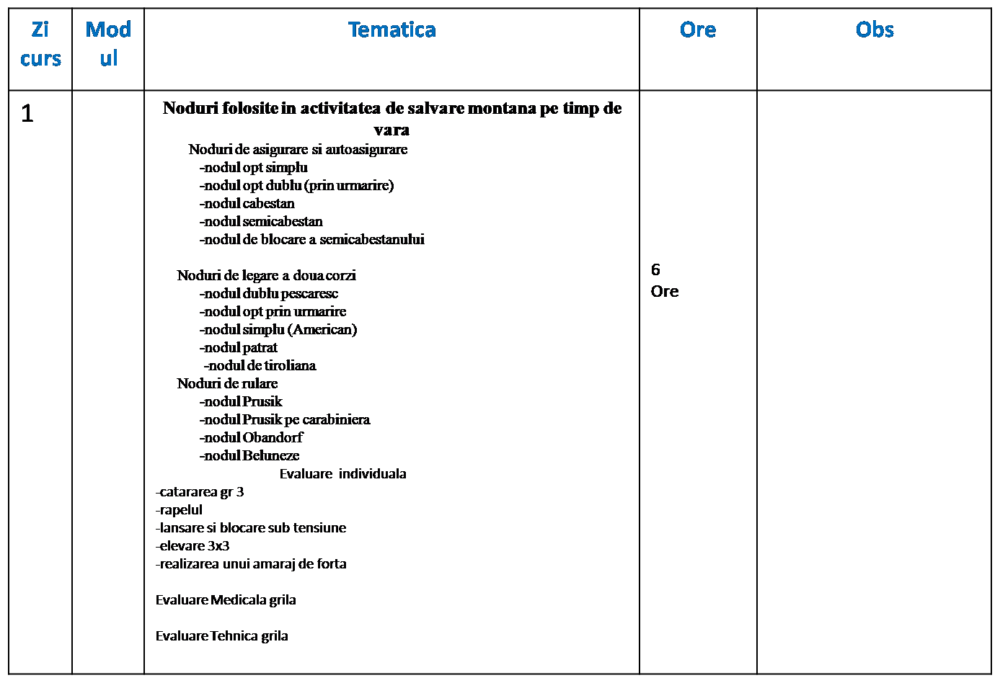
MATERIALE TEHNICE SPECIFICE ACTIVITATI DE SALVARE MONTANA PE TIMP DE VARA
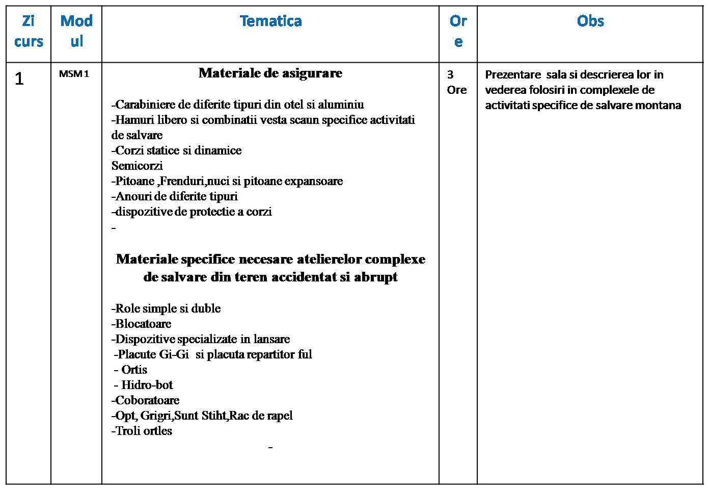
MATERIALE TEHNICE SPECIFICE ACTIVITATI DE SALVARE MONTANA PE TIMP DE VARA
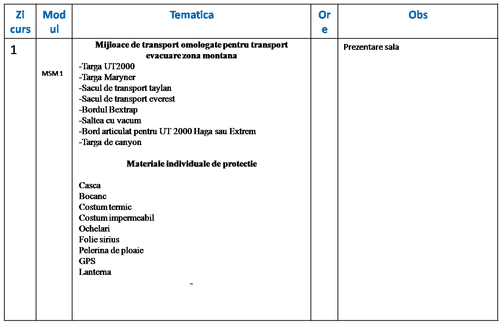
REALIZAREA AMARAJELOR SI A ATELIERELOR DE SALVARE
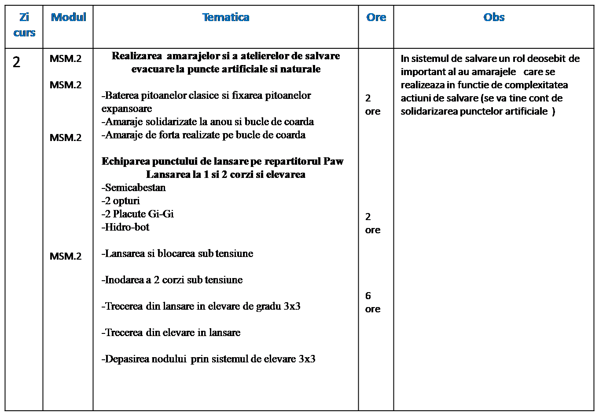
REALIZAREA BUCLEI REGLABILE SI A BUCLEI SALVATORULUI
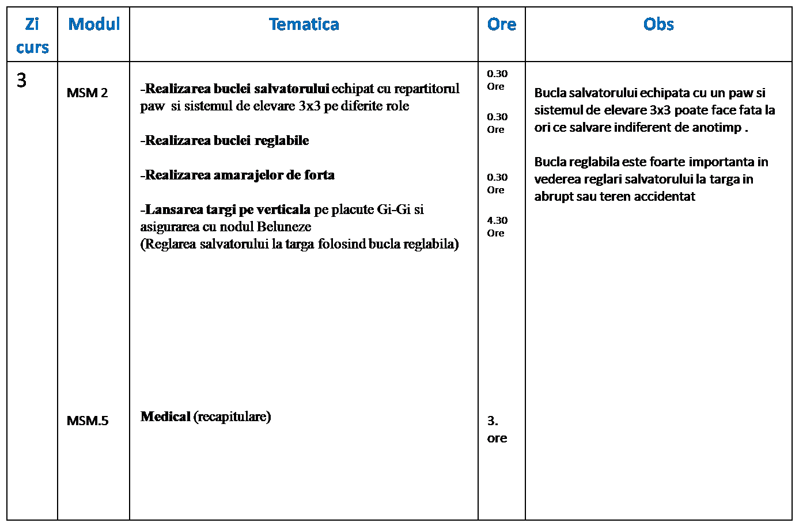
REALIZAREA PUNCTULUI FIX SI MOBIL LA O TIROLIANA SI INTINDEREA CORZILOR
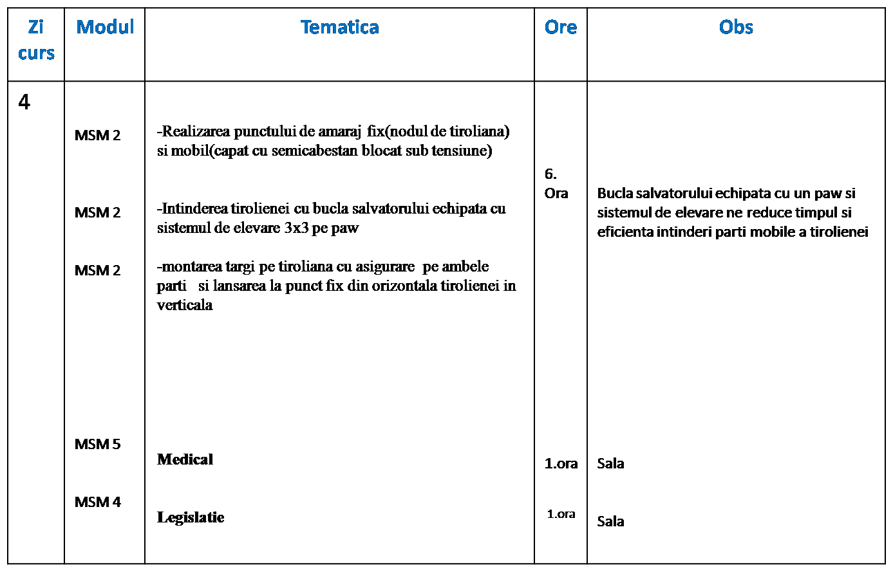
PROCEDURI TEHNICE DE TRECERE DINTRUN SISTEM DE LUCRU IN ALTU
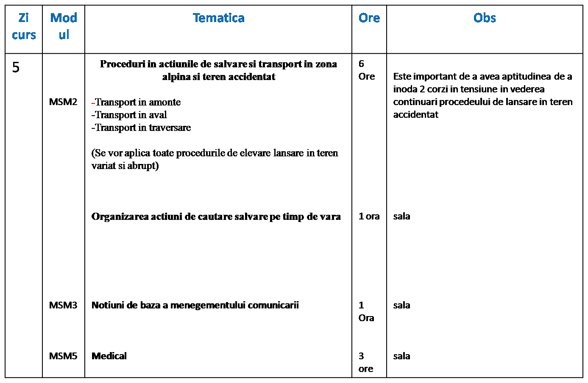
REALIZAREA SISTEMULUI DE ELEVARE IN OGLINDA DIN LANSARE BLOCARE SUB TENSIUNE
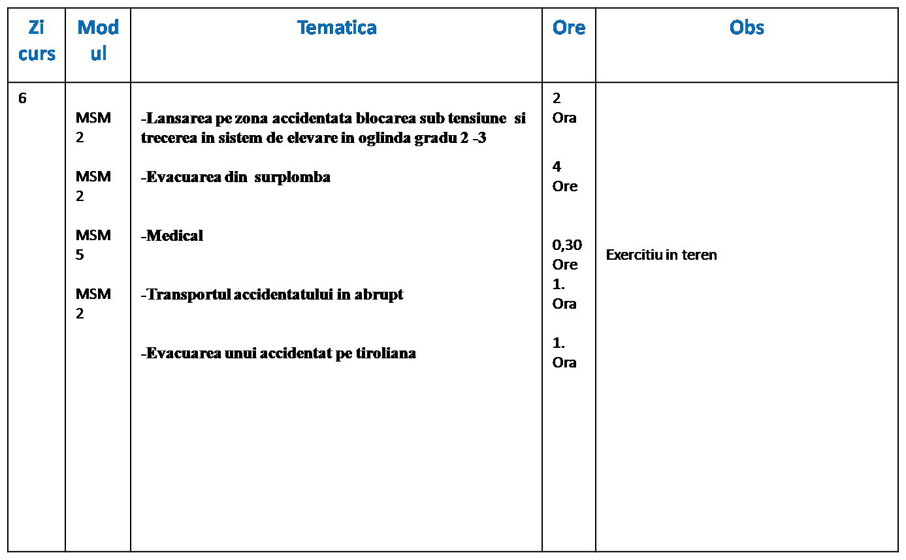
LANSAREA SI PRELUAREA IN TEREN VARIAT A MIJLOCULUI DE TRANSPORT CAT SI DISPUNEREA LUI IN ATELIERE
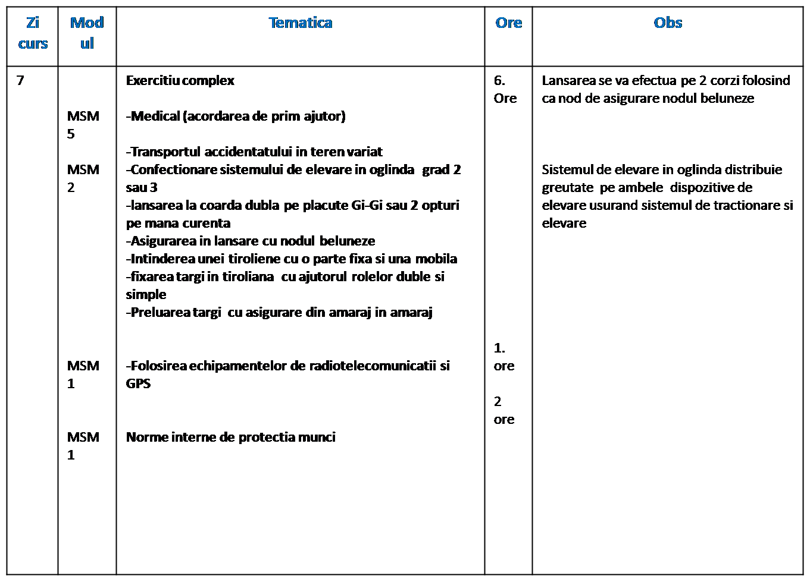
EXERCITIU COMPLEX DE EVACUARE DIN CANYON
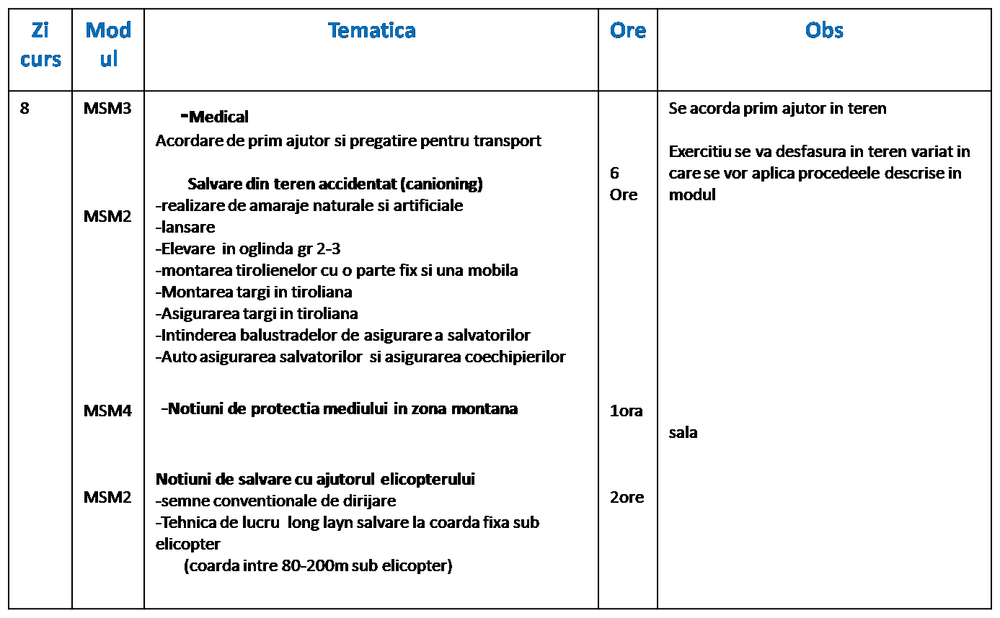
Examen de evaluare ciclu final scoala avansati vara
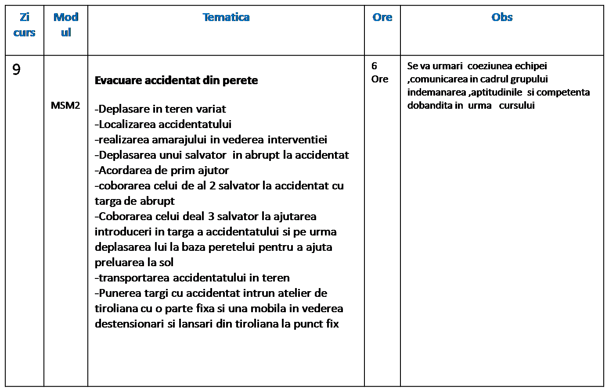
EVALUARE INDIVIDUALA FINALA
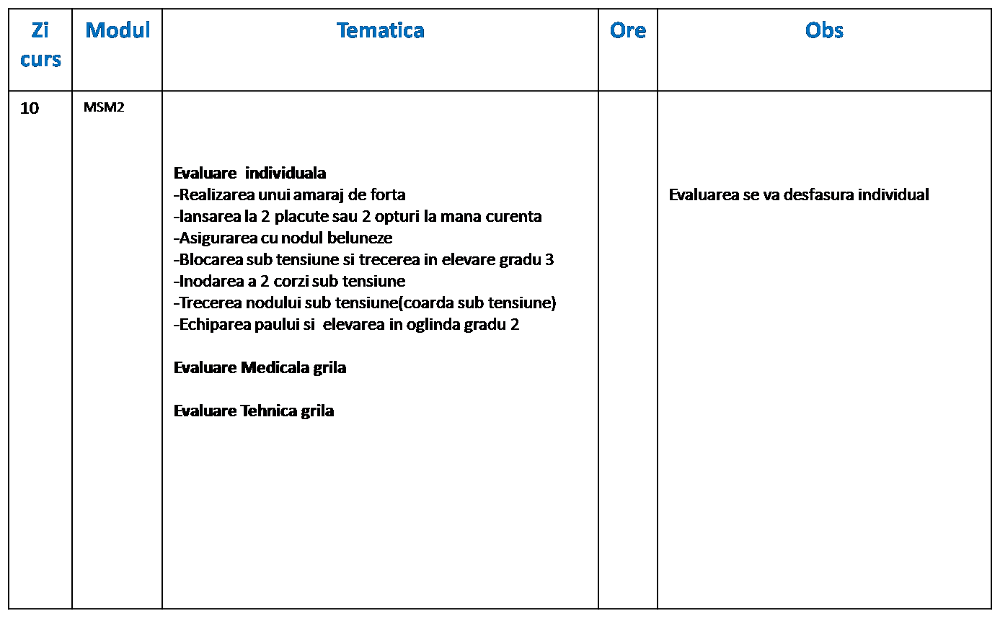